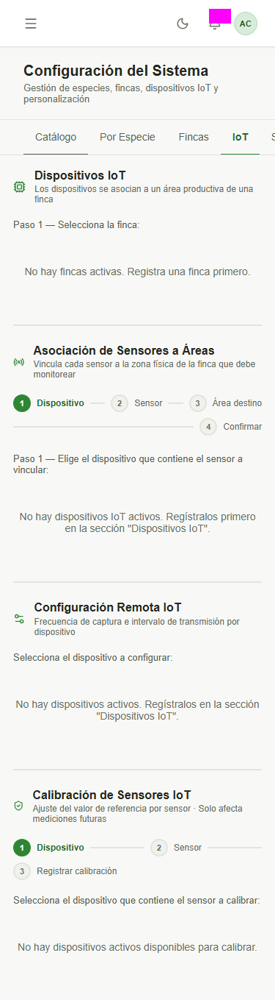
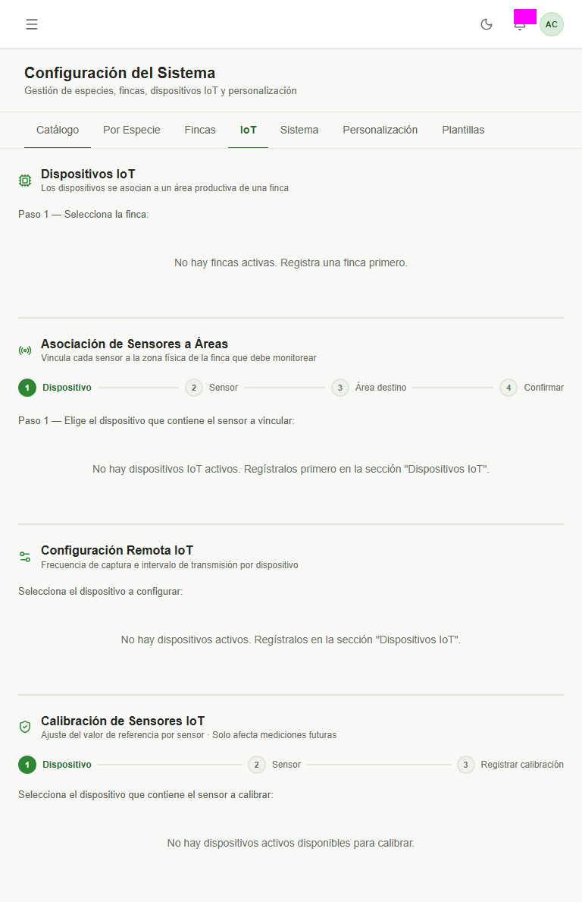
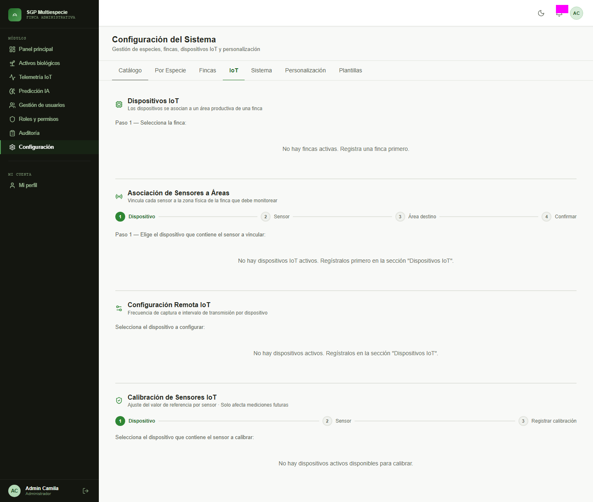

TC-DIS-64 — Consistencia visual
Configuración → IoT → Configuración Remota IoT (página completa) · RF-23 · Configuración remota de dispositivos IoT · Pareja de accesibilidad TC-DIS-63
| Fecha de ejecución | 2026-09-29 (baseline y estabilidad, noche) |
| Ambiente | TEST (https://api.inmero.co/) |
| Rol usado | Administrador (cuenta compartida de QA) |
| Herramienta | Playwright toHaveScreenshot · fullPage + captura-completa.css · workers=1 |
| Viewports | movil 375×667 · tablet 768×1024 · escritorio 1440×900 |
| Estabilidad | Estable Baseline 3/3 (estado vacío) y dos corridas 3/3 con 0 diferencias; 9 pasos saltados por #166. |
| Estado del caso | Parcial — bloqueado |
| Lecturas fijadas | Solo tema (Claro) y notificaciones, con cuerpos reales de TEST. El listado de dispositivos va real: es lo que se evalúa. |
Hallazgos
- Un error del backend se presenta como estado vacío: GET /configuracion/dispositivos-iot responde 400 (SERIAL_FORMATO_INVALIDO) y GET /configuracion/fincas 400 (VEREDA_REQUERIDO), pero la UI muestra «No hay dispositivos activos» / «No hay fincas activas» en vez de una alerta de error. El Panel principal de la misma cuenta muestra 24 dispositivos y 50 fincas.
- Accesibilidad (de TC-DIS-63): los campos de frecuencia e intervalo no tienen label asociado; el paso 4 fallará con getByLabel aunque se cierre #166.
Bloqueos
- #166 (backend): sin fincas ni dispositivos listables. Pendientes: selector de dispositivo, formulario de frecuencia/intervalo y error intervalo < frecuencia (3 estados × 3 viewports). Al cerrarse, la captura del estado vacío deja de aplicar y el spec lo avisa.
Capturas por estado y viewport
Estado vacío por #166 (parcial)



Selector de dispositivo
Bloqueado por #166
Bloqueado por #166
Bloqueado por #166
Formulario de frecuencia / intervalo
Bloqueado por #166
Bloqueado por #166
Bloqueado por #166
Error intervalo < frecuencia (por blur, sin enviar)
Bloqueado por #166
Bloqueado por #166
Bloqueado por #166